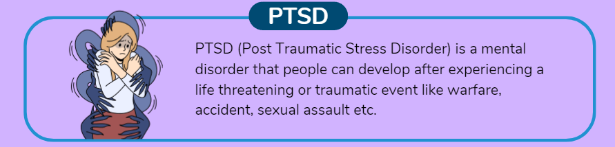

Post-Traumatic Stress Disorder (PTSD) is a mental health condition that can have a profound impact on an individual's life. Stemming from exposure to traumatic events, PTSD can affect anyone, regardless of age, gender, or background. In this blog, we delve into the intricacies of PTSD, exploring its causes, symptoms, treatment options, and ways to support those affected.
The Nature of PTSD:
PTSD develops in response to traumatic experiences such as natural disasters, accidents, physical or sexual assault, combat, or witnessing violence. What sets PTSD apart is its lasting impact, as symptoms may arise long after the trauma occurred. These symptoms can be distressing and intrusive, significantly affecting a person's daily life.

Symptoms and Signs:
Re-experiencing: Flashbacks, nightmares, and intrusive thoughts about the traumatic event.
Avoidance: Avoiding reminders of the trauma, including places, people, or activities.
Negative Changes in Mood and Cognition: Feeling detached, having negative beliefs about oneself, difficulty concentrating, and memory problems.
Hyperarousal: Increased startle response, difficulty sleeping, irritability, and hypervigilance.
Treatment Options:
Therapy: Evidence-based therapies like Cognitive Behavioral Therapy (CBT) and Eye Movement Desensitization and Reprocessing (EMDR) help individuals process the trauma, manage symptoms, and develop coping strategies.
Medications: Antidepressants and anti-anxiety medications may be prescribed to alleviate some symptoms of PTSD.
Support Groups: Connecting with others who've experienced similar traumas can provide a sense of understanding and belonging.
Lifestyle Changes: Engaging in regular exercise, maintaining a healthy diet, and practicing relaxation techniques can contribute to overall well-being.
Supporting Individuals with PTSD:
Empathy and Patience: Understand that healing takes time, and be patient with their emotional responses.
Open Communication: Encourage them to express their feelings and concerns without judgment.
Offer Assistance: Help with daily tasks when needed, as PTSD symptoms might affect their ability to function as usual.
Respect Boundaries: If they wish to avoid certain triggers, respect their need for space.
Seek Professional Help: Encourage them to seek professional support and accompany them to appointments if they're comfortable.
Breaking the Stigma:
It's important to note that seeking help for mental health challenges is a sign of strength, not weakness. Breaking the stigma around mental health encourages individuals to seek the necessary treatment and support they deserve.
PTSD is a complex and nuanced condition that requires a comprehensive understanding of its effects on individuals. By recognizing the symptoms, supporting those affected, and promoting awareness, we can work towards creating a more compassionate and informed society where individuals living with PTSD can find the help and healing they need.
ToBeHonest
@2023. All Rights Reserved.